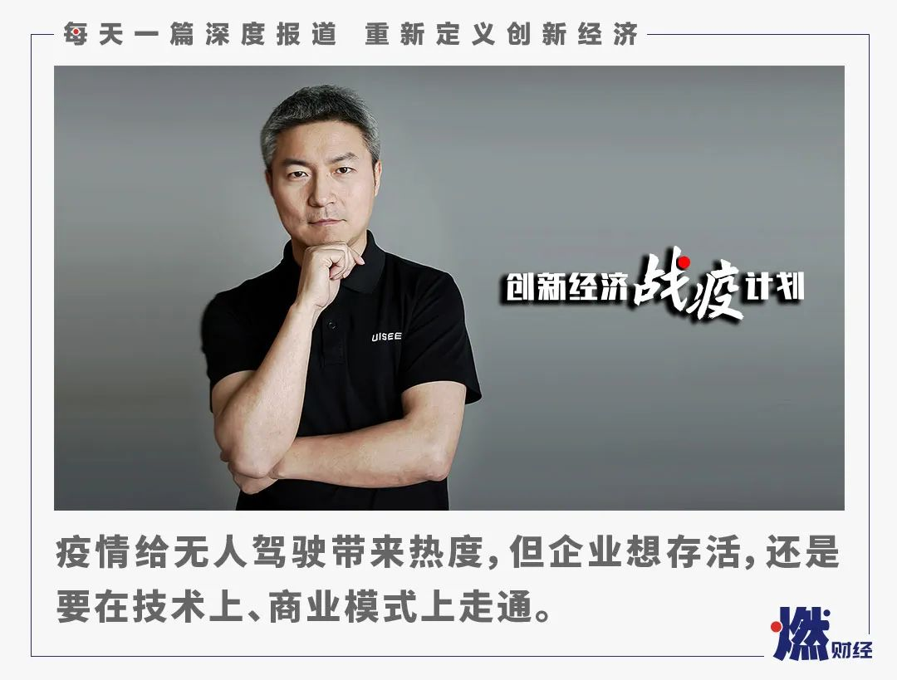

中科创星米磊：疫情和新基建，正在推动自动驾驶爆发
原文链接 备份链接 燃财经（ID:rancaijing）原创 作者 | 黎明 编辑 | 阿伦 疫情期间，自动驾驶行业迎来了哪些新机会？ 3月20日，燃财经举办线上沙龙，主题聚焦自动驾驶行业，中科创星创始合伙人、联席CEO米磊，新石器创始人 …

燃财经（ID:rancaijing）原创
作者 | 苏琦
编辑 | 魏佳
如果把2015年作为无人驾驶的元年，五年之后，行业该交作业了。
整个无人驾驶行业是一个资金密集型、人才密集型、长期煎熬才能迎来破局点的行业。往前走的过程当中，一定有人慢慢掉队。
驭势科技联合创始人、董事长兼CEO吴甘沙认为，任何一个行业，发展到第五年都会变得非常有紧迫感，疫情会给行业带来一些热度，大的投资事件会带来一些信心，但是本质上，企业想要存活下来，还是要在技术上、商业模式上走通。
3月20日，燃财经举办线上沙龙，主题聚焦于自动驾驶，中科创星创始合伙人、联席CEO米磊，新石器创始人兼CEO余恩源，驭势科技联合创始人、董事长兼CEO吴甘沙进行了主题分享，并和燃财经总编辑贺树龙做了对话。
吴甘沙表示，科研出身的他创业这几年来，经历了一个不断去除理想化而变得更加现实、更加有敬畏之心、更加尊重客观规律的过程。这个行业需要不断学习，未来5G浪潮会给行业带来哪些变化？新基建和无人驾驶领域如何擦出火花？他有着自己不一样的理解。
以下是吴甘沙的分享：
***疫情来了***
***公司没有浪费这场“好危机”***
武汉宣布封城之后，公司就成立了一个应急小组，在客户、员工和公司层面分别做了调整。
客户方面，公司觉得与其捐钱捐物资，慷投资人之慨，不如120%地兑现对客户的承诺，帮助他们度过困难。为此，团队梳理出几类项目。
第一类是用无人物流车帮助香港机场维持运营。疫情期间，我们决定让前期已经在香港提供本地运维服务的同学暂时留岗，然后用最快的时间把整个运维工作交接给当地的合作伙伴。整个疫情期间，香港机场的无人物流车运营没有一天中断过，像往常一样7×16h完成配送工作。
第二类是合作伙伴上汽通用五菱车厂春节后复工。我们的工程师进不去工厂，在厂外在线培训工厂工人操作无人物流，重新启动物流线，这条线路已经运行了好几个月，一条线大概七台车，能省掉八个驾驶员。
第三类是跟大客户的量产项目。今年在乘用车这块，我们正在准备量产项目。为了不耽搁项目， 2月6号就开始复工，但是供应链被卡住，代工生产商那边很迟复工，为了赶进度，员工就自己在实验室里造出了生产线一样的环境，在里面对零部件进行组装、标定、打标等，第一时间发到主机厂客户那边。
丘吉尔说过：“不要浪费一场好危机。”我觉得这一次的灾难，就是在要求我们用非常规的方法去完成对客户的承诺。当然，在这当中我们内部自己也倒逼着激发了很多潜能，团队自下而上做了很有趣的创新。
我们本身并不做无人配送，疫情期间，合作伙伴第一时间发来无接触配送和无人消毒的需求，我们有两三个工程师很早就回到了办公室，花了一周在合作伙伴的底盘上把这个功能做了出来，为了尽快用起来，员工自己切割、打磨PV板，做出无人车的外壳。另外，上汽通用五菱有无人消毒的需求，我们仅花了一两天的时间就对部分无人物流车完成了改装。
公司层面，我们盘点、加固了自己的现金流，预测最坏的情况，准备最好的情况，尤其是下半年需求的报复性反弹。同时对工作计划进行调整，把一些原来计划在下半年做的事情提前。
***新基建与无人化一定会擦出火花***
此次新冠肺炎被《世界是平的》的作者托马斯·弗里德曼认为是“公元前和公元后”那样的历史分割点，即B.C.（公元前）-Before Corona 和A.C. （公元后）-After Corona。
而恩格斯说过，没有哪一次巨大的历史灾难，不是以历史的进步为补偿的。在这个分割点后，新基建则会是这次疫情的补偿。
首先基础设施一定有强外部性，它具备了带动效应、放大效应和乘数效应。就像以前的GPS刚发明出来的时候，大家不知道它那么有用。但事实上，在GPS或者北斗当中投入一块钱，能够给社会带来100块钱的效益。
其次，中国新四大发明背后就有一些新的基础设施支持，包括移动支付、快捷低成本物流和强大的制造能力等等。这些新基础设施在未来的数字社会中具有非常重要的地位。
最后，这些基础设施需要满足几个条件，第一是低成本，长期的低成本。它要跟CPI，也就是物价上涨脱钩。第二是这些新基础设施需要具备反脆弱性，不能轻易地被灾难破坏，在任何情况下都要不间断工作。第三是高效率、易管理。
综上，我认为新基础设施应该是建立在非人力参与的基础上的，因此新基建跟无人驾驶一定会走到一起。同时，物流、智能制造、供应链等，都是充分市场化的，无人驾驶公司也应该思考，如何通过一个充分市场化的手段去使能（enable）新基建。
*****无人驾驶商业化需要满足四个条件*****
什么样的无人驾驶技术应该商业化？这里面有三个关键的要素：1、高频刚需，2、法律和技术上规模可行，3、算得过账。展开说，就是法律上拥有合规路权，技术上实现去安全员，商业模式可持续，能为客户降本增效，公司自己也有利润。
回顾驭势科技走过的路，也经过了几次试错，有些只能部分满足上面三点。我们最早开始做无人小巴，法律和技术上可行，但还不是客户的刚需和痛点，只取代一个驾驶员，盈利模式暂时也成问题。后来做了自动代客泊车AVP，由于法律和保险等问题，大规模商业化还需要一两年，同时toC的业务对成本的要求也非常高，在盈利模式上仍需探索。
目前驭势科技的几项业务，就拿机场的无人物流来说，场景刚需、法律和技术上已经实现无人化，一辆车能帮助机场取代两到三个司机的成本，公司自身也能从中盈利。目前来看，整个一季度大家都非常惨淡，驭势科技的营收和订单量却有大幅增长。
而要真正实现商业化，还要满足四化：无人化、常态化、规模化、运营化。前三化都好理解，运营化就是不再是象征性、示范性地跑，而是要嵌入到客户的业务当中，满足物流的节拍。另外操作员一定是客户方的操作工人，而不是你的工程师。事实上，在驭势科技的商业模式当中，主要的利润并不是来自于一次性地卖产品，而是来自于长期运维。
要判断一家公司是不是达到这四化也很简单。首先，看这家公司是不是有非常完整的安全测试的基础设施，我们公司现在在一个四十几亩地的测试场上，每天有近十种车型在里面24小时测试。常态化这块你只要蹲点一个礼拜，看它是不是风雨无阻的在提供服务，而且无人。规模化方面你只要把车的引擎盖或者后备箱打开，里面如果到处是设备和电线，肯定不是规模化，应该是方方正正的一两个盒子。运营化则是去看合同，看其是否拿到了头部客户的上量的运营合同，而不是POC或示范。
未来无人驾驶这个市场非常大，我们的发展逻辑是从商用车到乘用车，从特定场景到多个特定场景再到通用场景。我们不试图做整车，就做一个盒子（智能驾驶控制器）以及后面的云脑，和合作伙伴一起把整个产品解决方案做出来，所以我们具有很强的场景和业务扩展能力。
但即便是做特定场景，要想实现0误差也很难。一个学生考一次100分是极有可能的，但你要他连续几万次几十万次考100分，就很难。过去这两年中，我们就是在努力的连续几万次考100分。
对话吴甘沙：
***我不看好一些厂家略过L3***
***直接跨到L4***
燃财经：前不久，中国版的自动驾驶分级标准出炉，你认为目前中国的自动驾驶技术发展到了哪个阶段？
吴甘沙：在很长时间里，L2和L4两者是共存的。L2更多用在乘用车，而L4更多是在商用车，在一些特定场景当中去使用。L3是最近比较有争议性的一个技术，有的厂家说要略过L3，直接跨到L4，我不怎么看好。
虽然L3跟L2从功能形态上来看非常像，L2分为TJA（交通拥堵辅助）和HWA（高速公路辅助），L3分为TJP（拥堵自动驾驶）和HWP（高速自动驾驶）。但L3带来的好处就是驾驶员能真正释放双手双脚双眼和身心，他可以做其他的事情。相比L2来说，L3其实是一个非常有价值、有意义的功能形态。另外一方面，从实现的难度上面来说，L3要比L4简单很多。
只不过L3现在面临几个问题。第一，人机如何切换的问题。当车子需要人员操作时，它需要自己减速靠边，给予驾驶员足够多的时间来接管，这个动作几乎已经达到了L4的能力。第二就是成本，L3的成本比L2贵上一个数量级，这对于普通的乘用车消费者来说，难以承受。
更关键的是责任认定的问题。大家看特斯拉，用的词叫FSD，其实是L2+，因为它不敢承担这个责任。车子出了事故以后，如果是L2+，司机也是有责任的，但是一旦变成L3，那么在主要情况下，则需要车厂供应商去承担这个责任。
燃财经：距离实现L3、L4自动驾驶技术量产还有多远？
吴甘沙：我认为未来三五年，L3一定会出来，可能先是TJP，再是HWP，前不久发改委发布的智能汽车发展战略里面，把L3的大规模普及放到了2025年。
至于L4，如果是特定场景下的垂直细分的L4，今年可以说是元年，但像Robotaxi这样的L4，坦率来说没有人能够去预测，因为前面的每一次预测都被打脸了，行业认为还需要五到十年。
***真正的5GV2X大规模商业化***
***要到2024年左右***
燃财经：你曾说过“今年会是无人驾驶的洗牌年”，你认为什么样的公司会在这轮洗牌中被淘汰？又是什么样的公司可以存活下来？
吴甘沙：其实整个无人驾驶是一个非常长的赛道，这个行业是一个资金密集型、人才密集型、长期煎熬才能迎来破局点的行业。往前走的过程当中，一定有人慢慢掉队。
如果说把2015年作为无人驾驶的元年，到今年已经第五年了。任何一个行业，到了第五年都会变得非常有紧迫感，一方面公司自己也有疲惫感，一方面大家会对这家公司产生怀疑，所以今年的确是到了该交作业的一年。疫情会带来一些热度，一些大的投资事件会带来一些信心，但是本质上，还是要在技术上、商业模式上走通。
燃财经：你认为5G浪潮会给行业带来哪些变化？会增加哪些应用场景和商业化落地？
吴甘沙：5G我觉得大家要一分为二去看。一方面，5G是历史上第一个不是面向人的，而是面向物的网络。它一定会给今天的很多商业场景，包括无人驾驶、工业互联网带来无限的想象空间。我相信未来，5G大规模应用以后，车会变成非常笨的车，靠一个全局的城市大脑就能够指挥好，整个社会的成本也会降到最低。但另外一方面看，真正成熟的5G并没有那么快。
我们今天其实已经在应用很多V2X（车对外界的信息交换）技术，而这些技术一般来说还是LTE-V2X，需要在公网或者是专网上面去使用。真正的5GV2X（NRV2X），真正大规模商业化要到2024年左右。
短期内，我们还没办法去指望5GV2X能够给我们带来想象中的好处，比如说边缘计算等。V2X其实已经在很大程度上帮助了无人驾驶，比如说交通灯。今天大部分还是通过摄像头去识别红绿灯，但在一些情况下，比如说强逆光下根本看不清楚。这时候如果说交通灯本身有能在红绿灯切换的时候，通过PC5的协议进行广播，我的车马上就知道了，对动作进行预判，这是一个非常有用的商业场景。
还有很多其他的商业场景，比如说车路协同，远程监控和远程驾驶。但远程只能够给指令，这些指令是不是可以安全地执行，也取决于车端本身的决策逻辑，它能够去做判断。它如果认为这个指令不安全，是可以去否决远程指令的，这里面也可以运用到物联网网络安全技术，使得远程驾驶和车端智能有一个最合理的结合。
*****创业得有空杯心态*****
*****还要放下身段*****
燃财经：从英特尔中国研究院到进入商业世界，你曾说过自己在创业的过程中放下了“理想化”，“理想化”具体是指哪些方面？经历了什么样的转变过程？
吴甘沙：这几年深感创业不易，需要逐步放下“理想化”。“理想化”主要是几个方面，一个是对技术过分乐观，一个平台带给自己的光环消失，心态没有放平。
我创业第一年制定了一个非常激进的计划。我出来创业是二月份，原本希望到六月份，有三辆车能够跑起来，其中有一辆还要是Robotaxi这个级别的，后来就面临很多的问题。
比如很多零部件搞不到，需要供应商定制。以前我在英特尔的时候，要供应商帮忙，对方答应都非常快。刚刚创业后，这些供应商一开始答应的好好的，临到时间就说太忙了做不出来。所以后来我意识到，创业很多东西都要按照最坏的情况去预测，还得放下身段。
另外，在创业环境中，大公司学到的一些管理理念往往不适配，很多东西必须得重新去学，所以要有空杯心态。
创业确实是一个不断去除理想化而变得更加现实、更加有敬畏之心、更加尊重客观规律的过程。一边把理想化彻底放下，一边心头保留一丝用技术改变世界的火焰，两种心态交织之中往前走。


你会选择无人驾驶领域创业吗？为什么？
欢迎在评论区留下你的评论。原创文章转载请点击公众号菜单“转载合作”。
一手资讯/硬核报告/每日红包/线下活动！就差你了！快加微信rancaijing01回复“读者”一键上车！


原文链接 备份链接 燃财经（ID:rancaijing）原创 作者 | 黎明 编辑 | 阿伦 疫情期间，自动驾驶行业迎来了哪些新机会？ 3月20日，燃财经举办线上沙龙，主题聚焦自动驾驶行业，中科创星创始合伙人、联席CEO米磊，新石器创始人 …
原文链接 备份链接 以下文章来源于东四十条资本 ，作者曹玮钰 [东四十条资本 聚焦股权投资行业人物、事件、数据、研究、政策解读，提供专业视角和深度洞见 | 创投圈有趣的灵魂](#) 本文经授权转载自公众号东四十条资 …
原文链接 备份链接 燃财经（ID:rancaijing）原创 作者 | 孔明明 编辑 | 周昶帆 疫情之下，病毒肆虐，如何更安全地实现隔离，成了人们关注的重点。除了口罩、消毒液、护目镜等被抢断、线上电商订单激增之外，无人配送也在这非常时期 …
原文链接 备份链接 《创新经济战疫计划》，是燃财经在新型肺炎疫情期间推出的特别栏目，关注创新经济企业遇到的新难题、商讨应该采取的新对策，希望能够帮助中小企业一起战胜挑战、把握机会。 作者 | 苏琦 编辑 | 魏佳 2020年的这场疫情，时 …
原文链接 备份链接 燃财经（ID:rancaijing）原创 作者 | 孟亚娜 编辑 | 周昶帆 过去两年资本市场投资放缓，创投形势整体低迷，AI行业也迎来了资本寒冬。 一方面，企业期盼早日融资，继续在应用层面技术落地；另一方面，早期投资 …